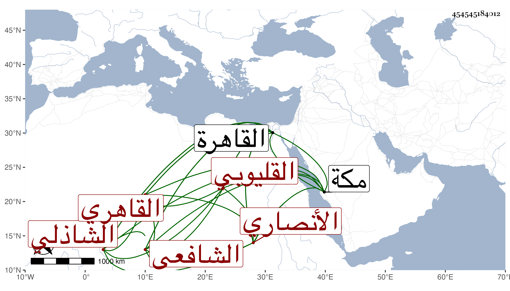

0902Sakhawi.DawLamic.ITO20230111-ara1.EIS1600.454545184012
Biography ID: 454545184012
303
محمد بن محمد بن عبد الله بن أبي بكر محي الدين أبو زكريا بن الشمس الأنصاري القليوبي الأصل القاهري الشافعي الشاذلي الماضي أبوه ويعرف بمحي الدين القليوبي وجده بابن أبي موسى . ولد قبل القرن وحفظ القرآن والمنهج وكتبا وأخذ في الفقه وأصوله والعربية وغيرها عن الشمس البرماوي وكذا أخذ عن البرهان البيجوري والولي العراقي في آخرين ولازم الاشتغال والتحصيل بالقاهرة وبمكة فإنه جاور بها في سنة أربع عشرة وسمع بها من الزين أبي بكر المراغي المسلسل والبردة وأربعي النووي وصحيح مسلم بفوت فيه وكذا سمع بالقاهرة المسلسل من لفظ الشرف بن الكويك وعليه بعض الشفا بل قرأ عليه جميع المنهاج في سنة ثماني عشرة ، وأجاز له عائشة ابنة ابن عبد الهادي وخلق وأقرأ الطلبة في الفقه والعربية وغيرهما وتكسب بالشهادة وكتب بخطه أشياء بل أظنه جمع لنفسه شيئا ولكنه لم يكن بالمتقن أجاز لنا وكانت له حلقة بالكاملية وبالباسطية . مات بالبيمارستان المنصوري في أول ذي القعدة سنة اثنتين وستين بعد تعلله مدة رحمه الله وعفا عنه وقد اشترك مع إخوة له أربعة كل منهم اسمه محمد فربما التبس ما يرى لبعضهم من السماع في الطباق بهذا فاعلمه .
